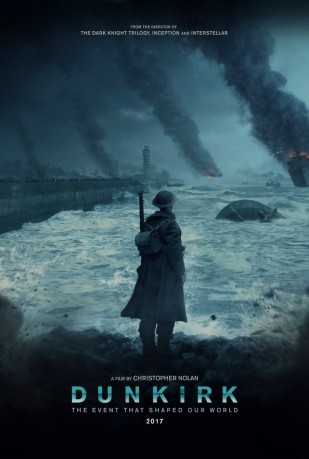

#7748 Dunkirk
Auszeichnungen: 3 Oscars gewonnen für 5 Oscars nominiert 1 BAFTA-Awards gewonnen
 gesehen am 02.01.2018
gesehen am 02.01.2018
 
 IMDB-Wertung: 7.9 / 10
IMDB-Wertung: 7.9 / 10  Tomatometer: 92
Tomatometer: 92  Metascore: 94
Metascore: 94 
Mai 1940, der Zweite Weltkrieg tobt: Die Nazis haben die französische Hafenstadt Dünkirchen eingekesselt und verdeutlichen den Bewohnern und den 400.000 dort stationierten Soldaten mit Flugblättern die scheinbar ausweglose Lage. Denn durch die feindlichen Truppen auf der einen Seite und das Wasser auf der anderen scheint es keine Chance auf Überleben zu geben. Doch in Großbritannien ersinnt man eine kühne Rettungsmission, von der zuerst nur die wenigsten glauben, dass sie Aussicht auf Erfolg haben kann: Während die eingekesselten Soldaten, darunter Tommy (Fionn Whitehead), Alex (Harry Styles) und Gibson (Aneurin Barnard), am Boden ums Überleben kämpfen, sorgen RAF-Piloten wie Farrier (Tom Hardy) in ihren Spitfires für Feuerschutz aus der Luft. Gleichzeitig eilen Zivilisten wie Mr. Dawson (Mark Rylance) den eingekesselten Soldaten mit ihren kleinen Booten übers Wasser zu Hilfe.
Jahr: 2017
Dauer: 106 Minuten
FSK: 12
Land: England Studio: Warner Bros.Tonspuren: DTS - ,
Untertitel:
Auflösung: 1080p (1920x1080) Größe: 7434 MB
Genre: Action, Thriller, Drama, Krieg, Geschichte
Regisseur:
Drehbuch: Christopher Nolan
Soundtrack: Hans Zimmer
Darsteller:
- Fionn Whitehead als Tommy
 Damien Bonnard als French Soldier
Damien Bonnard als French Soldier Aneurin Barnard als Gibson
Aneurin Barnard als Gibson- James Bloor als Irate Soldier
 Barry Keoghan als George
Barry Keoghan als George Mark Rylance als Mr. Dawson
Mark Rylance als Mr. Dawson- Tom Glynn-Carney als Peter
 Tom Hardy als Farrier
Tom Hardy als Farrier Jack Lowden als Collins
Jack Lowden als Collins Billy Howle als Petty Officer
Billy Howle als Petty Officer- Mikey Collins als Soldier
- Dean Ridge als Soldier at The Gap
- Bobby Lockwood als Able Seaman
- Will Attenborough als Second Lieutenant
 Kenneth Branagh als Commander Bolton
Kenneth Branagh als Commander Bolton James D'Arcy als Colonel Winnant
James D'Arcy als Colonel Winnant Matthew Marsh als Rear Admiral
Matthew Marsh als Rear Admiral Cillian Murphy als Shivering Soldier
Cillian Murphy als Shivering Soldier- Adam Long als Sub-Lieutenant
- Harry Styles als Alex
- Miranda Nolan als Nurse
- Bradley Hall als Sailor
- Jack Cutmore-Scott als Lifeboat Soldier 1
- Brett Lorenzini als Lifeboat Soldier 2
 Michael Fox als Engineer
Michael Fox als Engineer- Brian Vernel als Highlander 1
- Elliott Tittensor als Highlander 2
 Kevin Guthrie als Highlander 3
Kevin Guthrie als Highlander 3- Harry Richardson als Private
 Jochum ten Haaf als Dutch Seaman
Jochum ten Haaf als Dutch Seaman- Richard Sanderson als Heinkel Spotter
- Kim Hartman als Stewardess
 Charley Palmer Rothwell als Corporal
Charley Palmer Rothwell als Corporal- John Nolan als Blind Man
 Bill Milner als Lone Private
Bill Milner als Lone Private- Harry Collett als Boy
 Michael Caine als Fortis Leader (uncredited)
Michael Caine als Fortis Leader (uncredited) Paul Riley Fox als British Soldier (uncredited)
Paul Riley Fox als British Soldier (uncredited)- Jack Gover als British Soldier (uncredited)
- Christian Janner als British Soldier (uncredited)
- Jedediah Jenk als British Expeditionary Force Soldier (uncredited)
- Davey Jones als British Soldier / Station Officer (uncredited)
- Valiant Michael als Warrant Officer (uncredited)
- Christian Roberts als Royal Navy Officer (uncredited)
- Jan-Michael Rosner als British Soldier (uncredited)
- Connor Ryan als British Soldier (uncredited)
- Michiel van Ieperen als Royal Navy Sailor (uncredited)
- Lee Armstrong als Grenadier
- Luke Thompson als Warrant Officer
- Michel Biel als French Soldier 2
Datei: X:\2017(A-F)\Dunkirk (2017, FSK12, 1920x1080).mkv seit 15.12.2017
Festplatte: HD 2017(A-Z)-2018(A-F)
 Es gibt insgesamt 152 Filme in der Gruppe '2017(A-F)'
Es gibt insgesamt 152 Filme in der Gruppe '2017(A-F)'